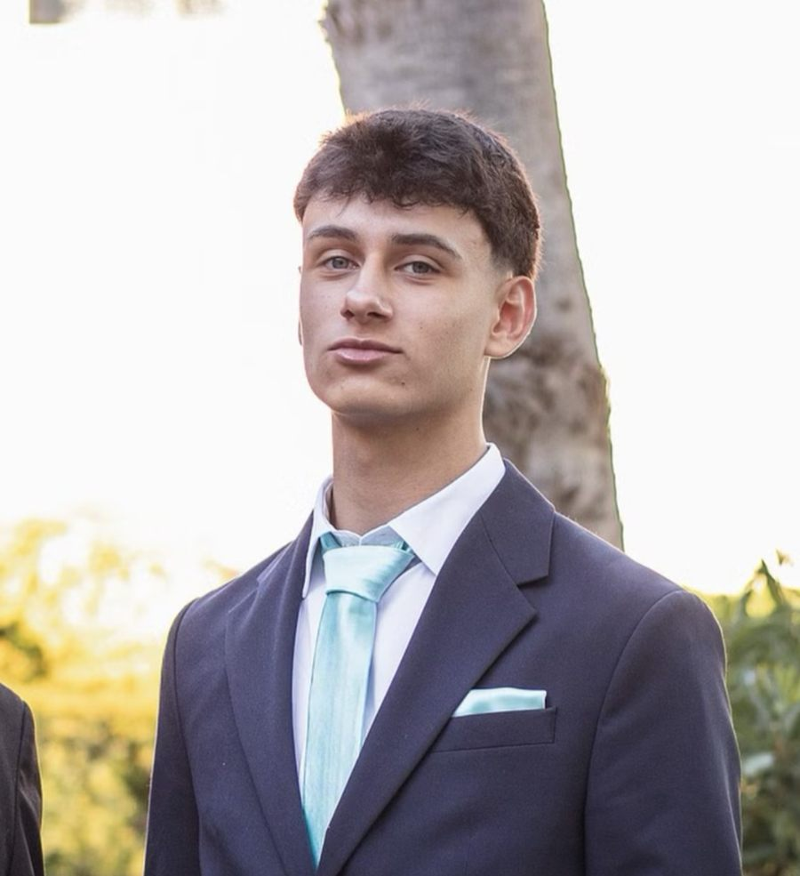

I'm Gonçalo Almeida, Computer Engineering student at Lusófona and Deloitte ambassador.

About
I'm a Computer Engineering student on a mission to understand how computers work, and to figure out why the thing that worked yesterday suddenly doesn't work today. It's a thrilling (and slightly chaotic) journey through code, circuits and the occasional stack overflow spiral.
When I'm not deep in code, I like to balance things out by being as active as possible. I've always loved sports, and recently I've been playing a lot of tennis and padel. Whether it's on a court or out for a run, I enjoy anything that gets me moving and gives my brain a break from staring at screens.
Right now I'm focused on learning as much as I can, both technically and personally. Growth comes from staying curious, stepping outside my comfort zone and being open to new experiences, whether that's in the classroom, at work or on the court.
Experience and education
Two branches of the same history, newest first.
- education
- experience
-
2026 to present
Deloitte ambassador HEAD
After the summer internship I became a Deloitte ambassador, a role I hold today.
-
Summer 2026
Deloitte summer intern
I joined U@Deloitte, the firm's summer programme, where I worked on team challenges and won the Team-Players award with my team, Infini9. See the photos
-
2025
Zara
Warehouse work: preparing and organising merchandise for store replenishment, locating items for customer requests and taking part in inventory control. I developed strong organisation and attention to detail.
-
2025
Lefties
My first professional experience. I took on different roles across the store and built customer service, teamwork, leadership and adaptability.
-
September 2024 to present
Universidade Lusófona
Degree in Computer Engineering. It's where I've built a solid foundation, explored different areas of tech and strengthened my taste for problem-solving.
-
2017 to 2024
Escola Frei Gonçalo de Azevedo
Science and Technology. A mix of challenges and growth where I learned a lot about responsibility and time management, sometimes the hard way.
From summer intern to ambassador at Deloitte
In the summer of 2026 I took part in U@Deloitte. There were talks, group challenges and a day cleaning up a beach. I left with the Team-Players award, shared with the Infini9 team, and came back as an ambassador.
Projects
University and personal work. Pick the technologies you care about and the query below changes with you.
Technical skills
Counted from the projects above. Choose one to see where I used it.
Personal skills
- Teamwork
- Responsibility
- Adaptability
- Quick learner
- Problem-solving
- Attention to detail
Passions
Technology. From playing with computers as a kid and building simple programs to exploring the latest innovations.
Sports. The teamwork, strategy and friendly competition keep things exciting and keep me focused.
Self-development. Reading, taking courses and setting new challenges, on both the personal and professional side.